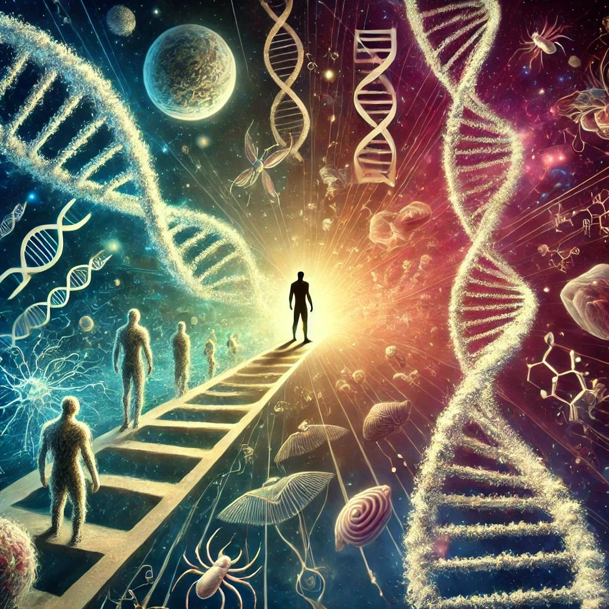

이기적 유전자
목차
작가
리처드 도킨스
출판일
1947년
감상평에 대한 AI그림
이기적 유전자를 통해 생명의 진화가 유전자의 자기 복제 전략에 의해 결정된다는 관점을 이해하게 되었다. 개체가 아닌 유전자가 생존의 주체라는 개념이 새로웠고, 인간의 행동까지 설명할 수 있음에 놀랐다. 이를 통해 이타심조차 유전자의 생존 전략일 수 있다는 점이 인상적이었다.

감상평에 대한 AI평가
진화와 유전자 중심적 사고
✨유전자 중심으로 생명의 진화를 설명하는 관점을 이해하고 새롭게 받아들였다.
✨유전자가 생존의 주체이며 인간의 행동까지 설명할 수 있음에 놀라움을 느꼈다.
✨이타심조차 유전자의 생존 전략일 수 있음이 인상적으로 다가왔다.